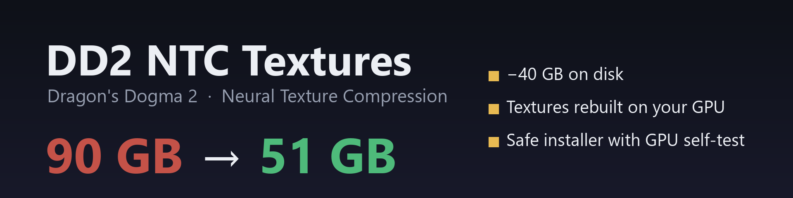
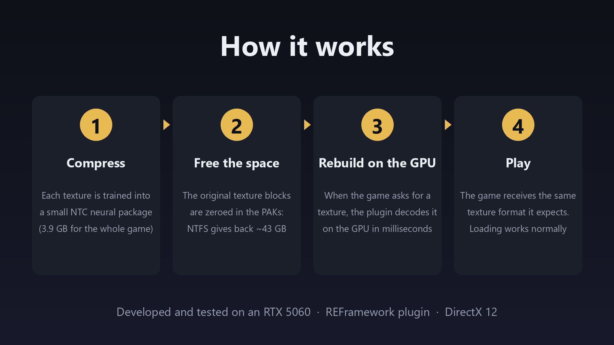
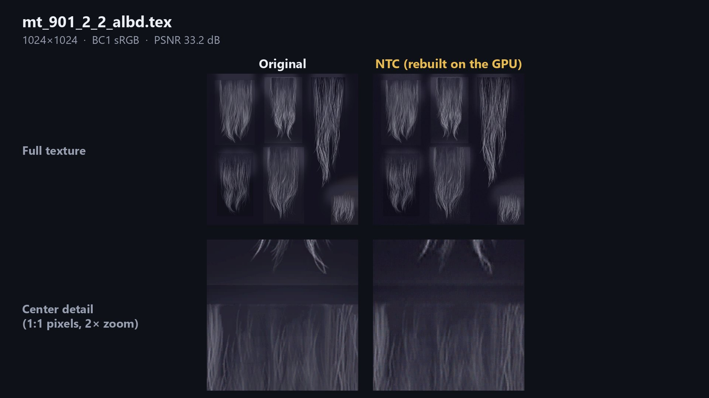
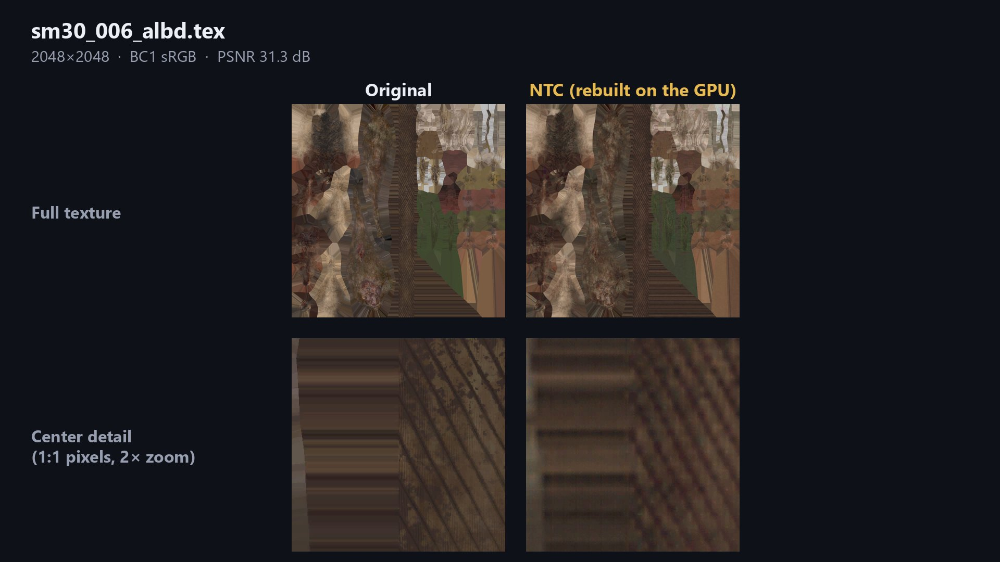
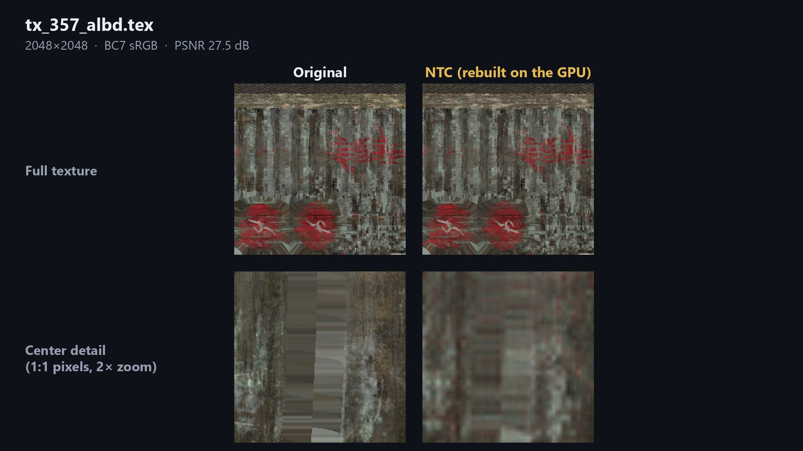

DD2 NTC Textures: Dragon's Dogma 2, about 40 GB smaller
A free mod that removes most textures from the game files and rebuilds them on your GPU at load time with NVIDIA Neural Texture Compression (NTC).
How it works
Each texture is replaced by a much smaller neural-compressed copy. When the game asks for a texture, a small REFramework plugin rebuilds it on the GPU with DirectX 12 compute shaders and hands it to the game as a normal texture. The original data is removed from the PAK files with NTFS sparse files, so the space really comes back.

The mod is about disk space, not FPS. Performance in game is the same; loading can take a few seconds longer because textures are rebuilt.
Original vs. NTC



Requirements
- Dragon's Dogma 2, game version 4.1 or 4.2
- REFramework for DD2 (tested with v1.5.9.1)
- A DirectX 12 GPU; the installer self-tests it before changing anything
- The game on an NTFS drive (the normal Windows format)
Back up your PAK files first. The installer deletes the original textures from the game files. To remove the mod, restore your backup or use Steam's "Verify integrity of game files".
Install
- Download all parts from Releases and extract them into the same folder.
- Close the game and run
verify.bat(checks only, changes nothing). - Run
install.bat.
Problems? Run report.bat and open an issue with the ZIP it creates.
Em português
Mod gratuito que reduz o Dragon's Dogma 2 de cerca de 90 GB para 51 GB em disco. As texturas são removidas dos arquivos do jogo e reconstruídas na sua GPU com a compressão neural de texturas da NVIDIA (NTC). Funciona nas versões 4.1 e 4.2 do jogo, em GPUs NVIDIA e AMD com DirectX 12. Faça backup dos PAKs antes de instalar. Guia completo em português.